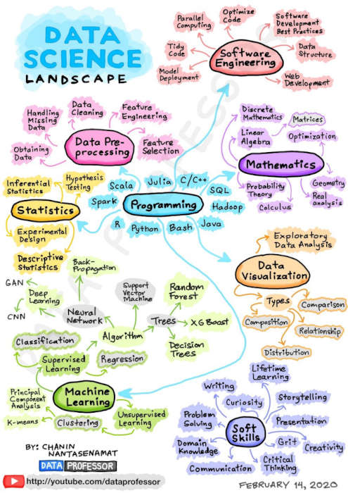
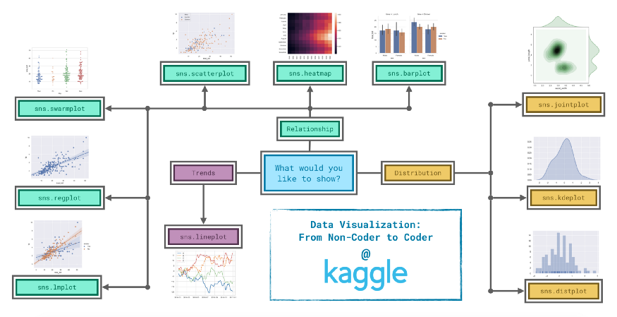
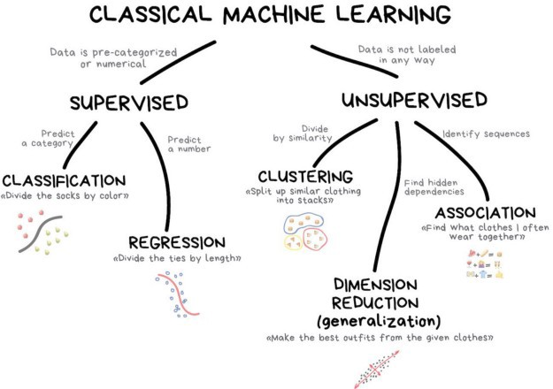

How to become a Data Scientist | A step by step guide
A step by step guide to become a data scientist.
 Image Credit:[Google Images]
Image Credit:[Google Images]
Becoming a Data Scientists is an exciting path, but you cannot learn data science within one year or six months—instead, it’s a lifetime process that you have to follow with proper dedication and hard work. To guide your journey, the skills outlined here are the first you must acquire to become a data scientist.
There are tons of resources and links out there, but often we get confused on which resources to follow. Don’t worry, I have got you covered. I have attached the links to several YouTube channels, blogs, courses, and other websites that I found appropriate for a beginner.
You can also use the Data Science Community Websites Like Analytics Vidhya and Kaggle for implementing your learning and getting hands-on experience in Data Science.

Table of Contents
STEP 1: Choose A Programming Language (Python / R)
The first step while starting the Data Science Journey is to get familiar with a programming language. Between the two, Python is the most preferred coding language and is adopted by most Data Scientists. It is easy to understand, versatile, and supports various in-built libraries such as Numpy, Pandas, MatplotLib, Seaborn, Scipy, and many more.
- FreeCodeCamp’s Python Tutorial (Recommended)
- Kaggle’s Python Course
- Krish Naik’s Python Tutorial (Recommended)
- Udemy’s Python for Data Science and Machine Learning Bootcamp
- Coursera Python Course
NOTE: While learning Python, one should know essential Python variables, data types, OOPs concepts, Numpy, Pandas, Matplotlib, and Seaborn
STEP 2. Statistics
For becoming a Data Scientist, having knowledge of statistics and probability is as essential as having salt in food. Knowing them will help the data scientists interpret large data sets, get insights from them, and analyze them better.
- Krish Naik’s Statistics Playlist (Recommended)
- Coursera Statistics Course
- Khan Academy Statistics And Probability Course
- FreeCodeCamp Statistics Course (Recommended)
NOTE: Statistics provides the ideas about Mean, Median, Mode, Range, Variance, Standard Deviation, Graphs or Plotting, Populations, and Samples.
STEP 3: Learn SQL
Structured Query Language (SQL) is used for extracting and communicating with large databases. One should focus on understanding the different types of normalization, writing nested queries, using co-related questions, group-by, performing join operations, etc., on the data and extract in raw format. This data will then further be cleaned either in Microsoft Excel or by using Python libraries.
- Freecodecamp SQL (Recommended)
- Intro To SQL By Kaggle (Recommended)
- Advanced SQL By kaggle
- Edureka’s SQL Playlist
NOTE: In SQL, one should know about creating tables, inserting data, updating data, deleting data, and performing some basic query operations.
STEP 4. Data Cleaning
When a Data Scientist is given a project, the majority of the time goes into cleaning the data set, removing unwanted values, handling missing values. It can be achieved by using some inbuilt python libraries like Pandas and Numpy. One should also know how to manipulate data using Microsoft Excel.
- Blog — Cleaning Data Using Python (Recommended)
- Edureka’s Microsoft Excel Course
- Learning Pandas By Kaggle (Recommended)
NOTE: In Microsoft Excel, you should know basic data filtering or sorting, Functions or Formulas, Vlookup, Pivot table and charts, and Tables, etc.
STEP 5: Exploratory Data Analysis
Exploratory data analysis is the essential part when talking about data science. The data scientist has many tasks, including finding data patterns, analyzing data, finding the appropriate trends in the data and obtaining valuable insights, etc., from them with the help of various graphical and statistical methods, including:
A) Data Analysis using Pandas and Numpy B) Data Manipulation C) Data Visualization
- Intro To EDA By Code Heroku’s (Recommended)
- Blog — Performing EDA on Iris Data Set (Recommended)
- Coursera Course On EDA, Statistics, Probability

STEP 6: Learn Machine Learning Algorithms
According to Google, “Machine learning is a method of data analysis that automates analytical model building. It is a branch of artificial intelligence based on the idea that systems can learn from data, identify patterns and make decisions with minimal human intervention.”
It is the most crucial step in a life cycle of a data scientist where one has to build various models using machine learning algorithms and should be able to predict and come with the most optimum solution to solve any problem.
- Machine Learning By Andrew NG (Recommended)
- Deep Learning By Krish Naik
- Intro To ML By Kaggle (Recommended)
- Machine Learning By Krish Naik (Recommended)
- Coursera Deep Learning Specialization

Step 7: Practice On Analytics Vidhya and Kaggle
After acquiring the basics of Data Science, now it’s time to get hands-on experience in its part. There are many online platforms, like Kaggle and Analytics Vidhya, that can provide you with hands-on experience with both beginner and advanced level data sets. They can help you to understand various machine learning algorithms, different analyzing techniques, etc.
You can follow the below approach to know how effectively you can use these platforms.
- You can start by first downloading the datasets and analyzing the data, and implementing all the different techniques you have learned.
- Next, you can check on other people’s notebooks and understand how they have solved a particular problem or gained insights from the data. (This method will certainly make you more confident and help to improve your knowledge.)
- After you are confident enough, you can participate in Competitions organized by both Kaggle and Analytics Vidhya. This will not only help you to sharpen your skills in Data Science but also to learn Data Science better.
By Aditya Agarwal, Graduate Student at Northeastern U
PATOORI BHANU PRAKASH
Research Scholar of Management Studies
His research interests include distributed robotics, mobile computing and programmable matter.